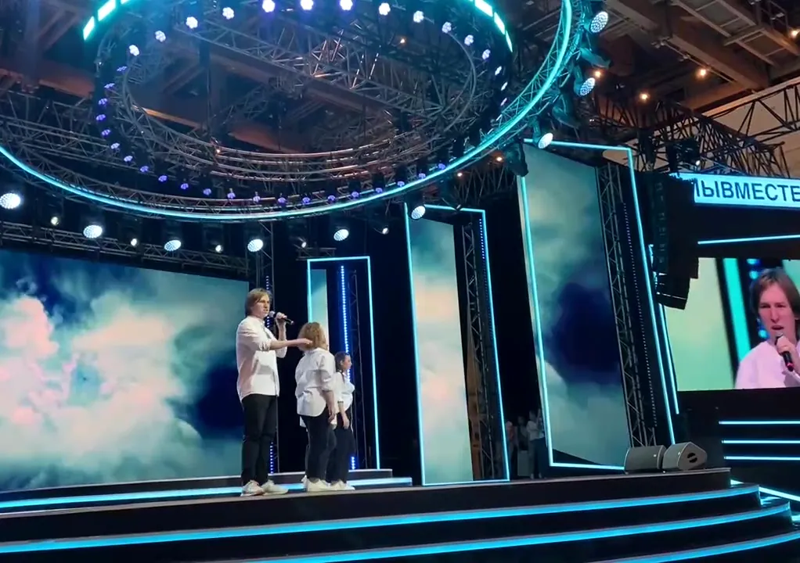
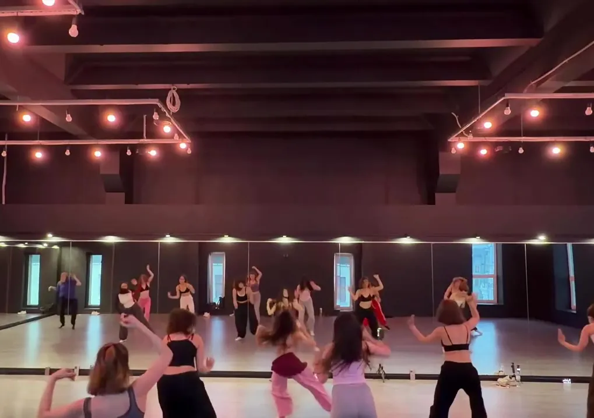

Вокал
11 лет занятий, сольные номера и год участия в хоре факультета эстрадно-джазового вокала МПГУ.
Творческая видеовизитка · 2026
Три увлечения, множество выступлений и одна любовь к творчеству.


Через музыку, выступления и движение можно рассказывать истории без лишних слов. Здесь — три основных творческих направления и записи, которыми хочется поделиться.
11 лет занятий, сольные номера и год участия в хоре факультета эстрадно-джазового вокала МПГУ.
Любимые песни, аккомпанемент и опыт выступлений на сцене.
Пять лет бальных танцев, знакомство с разными стилями и латина-хорео сегодня.
В видеовизитке — только фрагменты. Здесь можно посмотреть номера целиком.
Видео откроются на Google Диске в новой вкладке. Для просмотра не должен требоваться запрос доступа.
Буду рада ещё не раз поделиться музыкой и встретиться со зрителями на сцене.
На связи